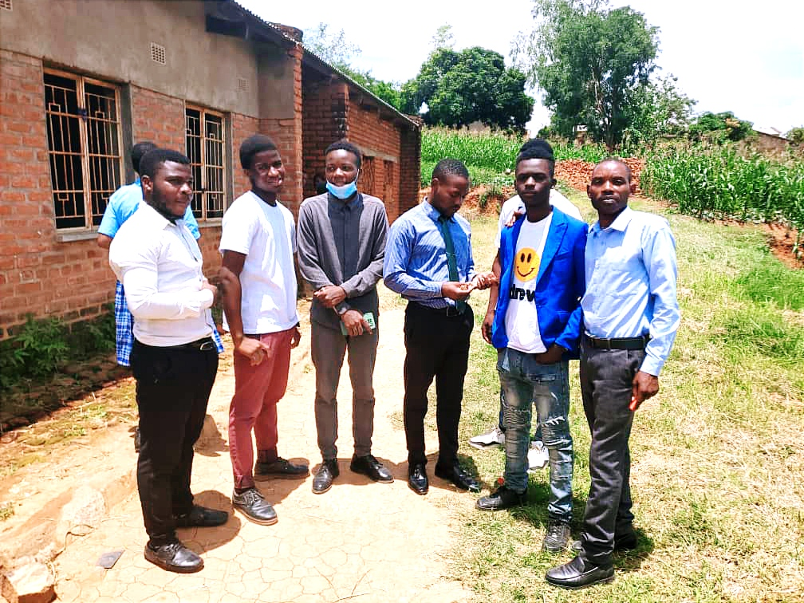

CheckMySmile
Developed and tested by fellow medical students. Thousands of avoidable pain and systemic complications could be curbed with early detection and awareness. The platform makes oral health trackable and engaging.
Mini Bio-Digester (2021)
Built as Form 2 student at Dedza Secondary School. First engineering project that sparked my curiosity in applied problem-solving and sustainable technology. Designed and constructed using locally available materials.


KUHES Campus Connect
Exclusive student networking platform using @kuhes.ac.mw emails to create a secure academic network for collaboration and resource sharing. Beta launch planned for Q3 2025.
Avocado Oil Extraction (2022)
Experimental project exploring cold-press extraction methods for avocado oil. Investigated potential for small-scale agribusiness and value addition to local agricultural products.


Personal Healing Journal
A 20-page handwritten document capturing spiritual growth, discipline tracking, emotional processing, and personal philosophy. This practice keeps me grounded and intentional.
Teaching & Mentorship
1.5 years teaching Mathematics and Physics at Bright Future Private Secondary School. Mentored 10+ students through academic and personal guidance. Developed simplified teaching aids and peer-learning methodologies.
Students
Mentees


Peer Mentorship Program
Guiding 10+ students through academic challenges, career advice, and personal development. Weekly one-on-one sessions focused on identity, discipline, and growth.
KUHES Innovation Coordination
As KUHES Science For All Innovations Coordinator, I lead student-driven innovation initiatives. Coordinated 10+ projects, developed mentorship frameworks, and organized innovation sprints.